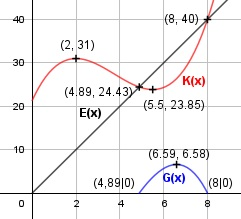

Aufgabe 81 Die Tabelle zeigt die Kosten K(x) eines Betriebes abhängig von der gefertigten Menge x. x 0 2 5 8 K(x) 64/3 31 24,25 40 a) Ermitteln Sie die ganzrationale Kostenfunktion 3. Grades. b) Wie groß sind das Kostenminimum und -maximum? c) Wo liegt die Gewinnschwelle, wenn die Gewinngrenze 8 ME und der Erlös 5 GE/ME betragen? d) Wie groß ist der maximale Gewinn? a) Allgemeine Funktion: (Die zu emittelnde Funktion ist keine typische Kostenfunktion, da sie nicht monoton ansteigt. Sie hat lokale Extrempunkte.) K(x) = ax3 + bx2 + cx + d K(0) = 64/3 --> d = 64/3 K(2) = 31 = a*23 + b*22 + c * 2 + 64/3 |-(64/3) 8a + 4b + 2c = (29/3) (1) K(5) = 24,25 = a*53 + b*52 + c*5 + 64/3 |-(64/3) 125a + 25b + 5c = (35/12) (2) K(8) = 40 = a*83 + b*82 + c*8 + 64/3 |-(64/3) 512a + 64b + 8c = (56/3) (3) 3 + 1 * (-4) 512a + 64b + 8c = (56/3) -32a - 16b - 8c = -(116/3) ------------------------------- 480a + 48b = -20 (4) 2 * 2 + 1 * (-5) 250a + 50b + 10c = (35/6) -40a - 20b - 10c = -(145/3) ---------------------------------- 210a + 30b = -(255/6) (5) 4 * (-30) + 5 * 48 -14 400a - 1 440b = 600 10 080a + 1 440b = -2 040 -------------------------------- -4 320a = -1 440 |:-4320 a = 1/3 In (4) eingesetzt: 480/3 + 48b = - 20 |-160 48b = - 180 | :48 b = -3,75 a und b in (1) eingesetzt: 8/3 - 4 * 3,75 + 2c = 29/3 |-8/3 -15 + 2c = 7 |+15 2c = 22 |:2 c = 11 K(x) = (1/3)x3 - 3,75x2 + 11x + 64/3 b) K'(x) = x2 - 7,5x + 11 K''(x) = 2x - 7,5 x2 - 7,5x + 11 = 0 p, q - Formel: p = -7,5, q = 11 x1,2 = x1,2 = 3,75 ± x1,2 = 3,75 ± x1,2 = 3,75 ± 1,75 x1 = 5,5 K(5,5) = (1/3) * 5,53 - 3,75 * 5,52 + 11 * 5,5 + + 64/3 = 23,85 x1,2 = 2 K(2) = (1/3) * 23 - 3,75 * 22 + 11*2 + 64/3 = 31 K''(5,5) = 2 * 5,5 - 7,5 > 0 --> Tiefpunkt (5,5|23,85) K''(2) = 2 * 2 - 7,5 < ---> Hochpunkt (2|31) c) E(x) = 5x G(x) = E(x) - K(x) G(x) = 5x - ((1/3)x3 - 3,75x2 + 11x + 64/3) G(x) = - (1/3)x3 + 3,75x2 - 6x - 64/3 G'(x) = - x2 + 7,5x - 6 G''(x) = - 2x + 7,5 Nullstellen: x1 = 8 Hornerschema: -1/3 3,75 -6 -64/3 x1 = 8 -8/3 104/12 64/3 ------------------------------- -1/3 13/12 8/3 0 Polynomdivision: -1/3x3 + 3,75x2 - 6x - 64/3 : (x - 8) = -(-1/3x3 - 8/3x2) ------------------ (13/12)x2 - 6x - 64/3 -((13/12)x2 - (104/12)x) ------------------------ (8/3)x - 64/3 -((8/3)x - 64/3) ----------------- 0 Ergebnis = -(1/3)x2 + (13/12x + 8/3 -(1/3)x2 + (13/12)x + 8/3 = 0 |*(-3) x2 - 3,25x - 8 = 0 p, q - Formel: p = -3,25, q = -8 x1,2 = x1,2 = 1,625 ± x1,2 = 1,625 ± x1,2 = 1,625 ± 3,26 x1 = 4,89 Gewinnschwelle x2 = -1,635 keine Lösung d) G'(x) = - x2 + 7,5x - 6 = 0 | :(- 1) x2 - 7,5x + 6 = 0 p, q - Formel: p = -7,5, q = 6 x1,2 = x1,2 = 3,75 ± x1,2 = 3,75 ± x1,2 = 3,75 ± 2,84 x1 = 6,59 G(6,59) = -(1/3) * 6,593 + 3,75 * 6,592 - - 6 * 6,59 - 64/3 = 6,58 GE x2 = 0,91 G(0,91) = - (1/3) * 0,913 + 3,75 * 0,912 - - 6 * 0,91 - 64/3 = - 23,94 GE --> Verlust G''(6,59) = - 2 * 6,59 + 7,5 < 0 --> Hochpunkt (6,59|6,58) Bei 6,59 ME ist der Gewinn am größten und beträgt 6,58 GE.
